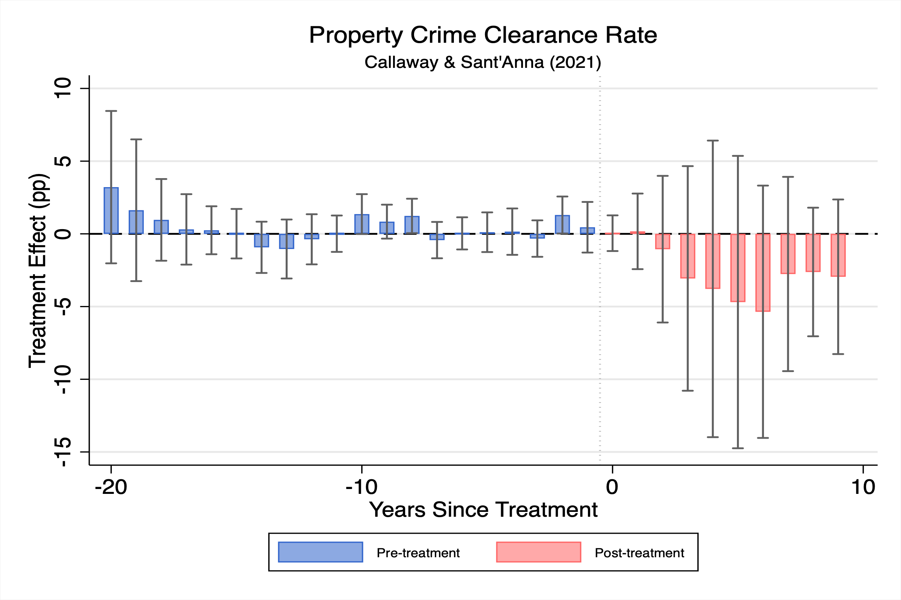

Wage Caps and Police Performance: Evidence from Arbitration Reform
New Jersey's 2% cap on police arbitration awards cut negotiated salary increases by 1.99 percentage points. Clearance rates drifted down afterward, but the estimates are imprecise and not statistically distinguishable from zero.
Abstract
This paper examines whether fiscal constraints on public-sector compensation reduce police performance, using New Jersey's two percent cap on police arbitration awards (2011–2017). I assemble a new thirty-year dataset of police contracts that pinpoints each agency's contract expiration date, which determines when the cap became binding. The cap bound. Across 460 agencies it reduced negotiated salary schedule increases by 1.99 percentage points against a pre-cap mean of 3.6 percent, and it lowered the entry wage written into contracts by about 4.5 percent. Staggered difference-in-differences estimates of the effect on crime clearance rates are negative but small and imprecise, declines of 1.9 to 2.6 percentage points that are not statistically distinguishable from zero. The muted response is not explained by officers being made whole elsewhere in the contract. The compressed value does not reappear in the uncapped components, such as uniform allowances, tuition stipends, and leave, and at least four fifths of it is unaccounted for on the margins contracts record.
